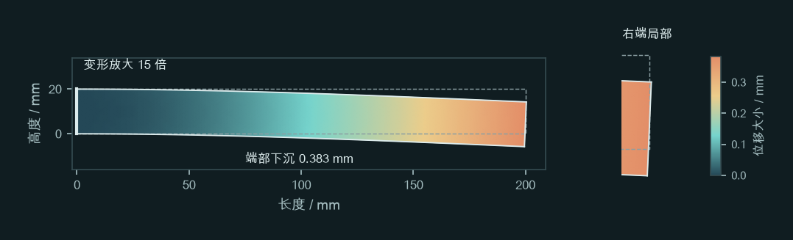
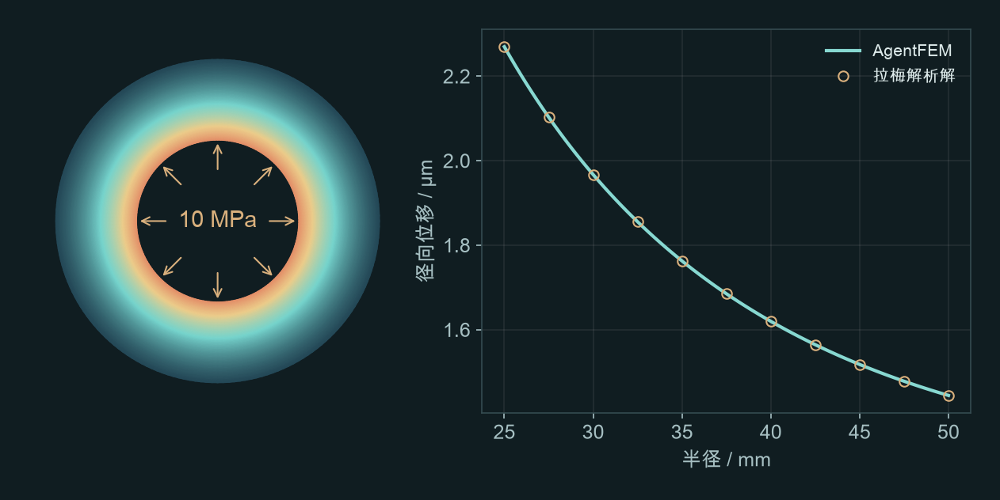
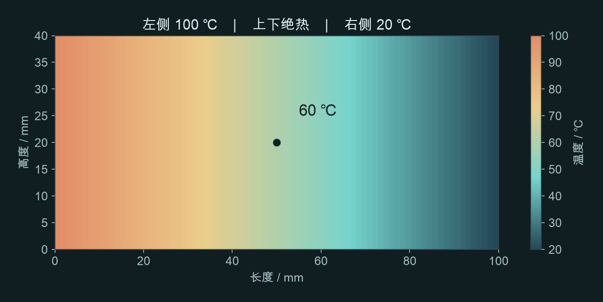
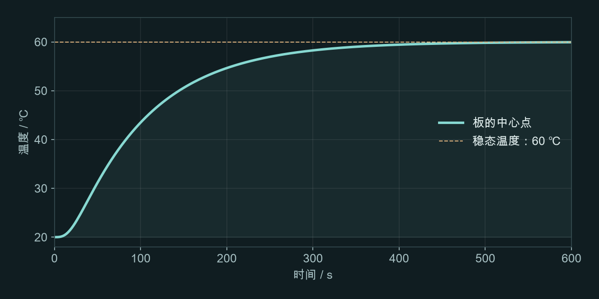
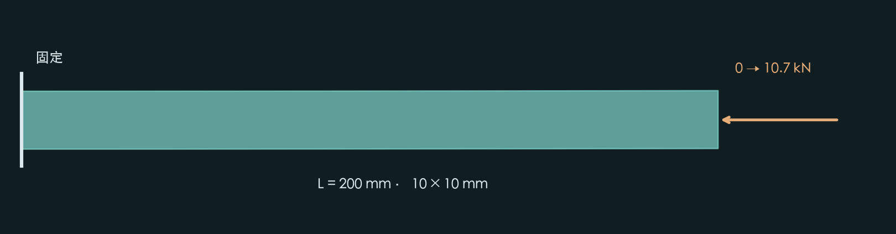
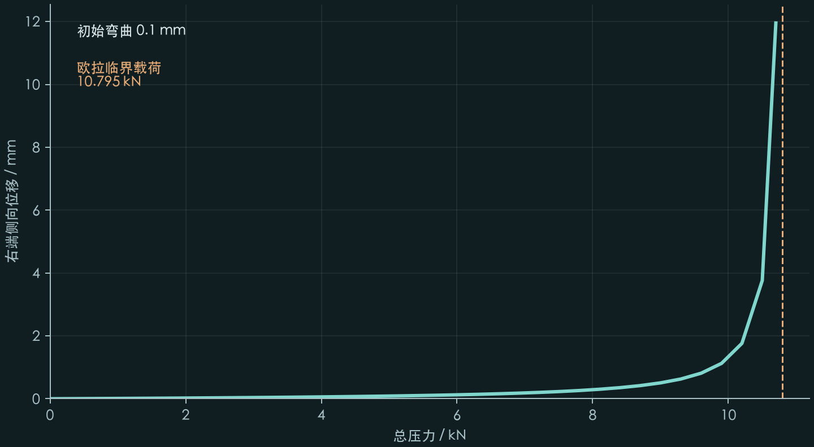
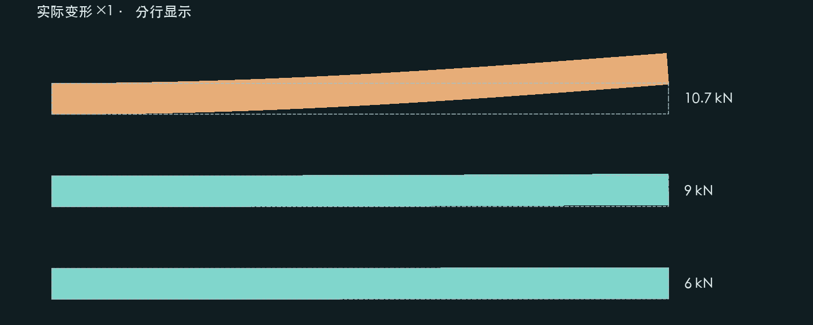
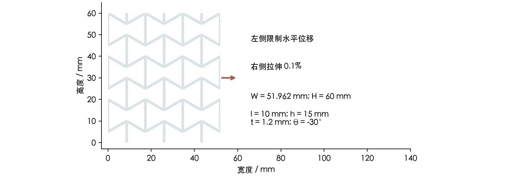
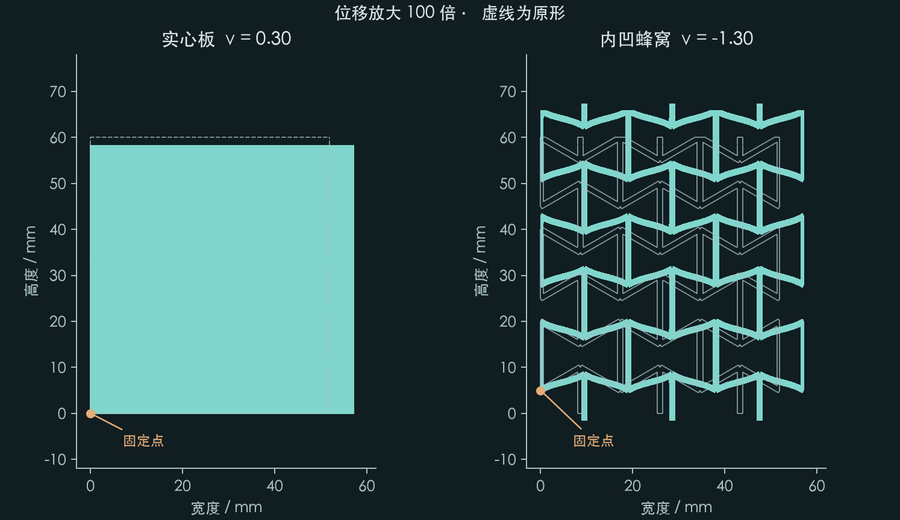

AGENTFEM / 入门教程
第一次用 AI 做有限元
六个小案例，复制提示词就能开始。先算出一个结果，再试着改变条件。
开始前，只确认一件事
你使用的 AI 助手能否调用 AgentFEM。以 Codex 为例，它可以在获得授权后使用本地命令行或 MCP 工具运行软件。只有聊天功能、没有接入计算工具的 AI，不会因为收到这些提示词就自动完成仿真。
打开一个用于练习的项目文件夹，在 AI 助手里发送：
请先检查能否调用 AgentFEM，告诉我软件版本和项目保存位置。若需安装或配置，先征求我的同意。现在只检查环境，不开始仿真。
确认可用后，先发送下面这段约定，等 AI 回复后，再从下方选择一个案例，发送它的提示词。
接下来我会发送题目。收到后，请新建 AgentFEM 项目，检查并运行，保留模型和结果。完成后只展示一张结果图、关键数值与单位，并用两三句话解释，不展开长篇分析。缺少必要条件或无法运行时请说明。现在只回复“准备好了，请发送题目”，不要开始计算或猜测题目。
还没安装？让 AI 帮你装
将下面这段话发给能操作本机的 AI 助手，按提示授权即可。
请帮我安装 AgentFEM：https://github.com/haoming-luo/agentfem 。按 INSTALL.md 安装，阅读 AGENT_GUIDE.md 并运行 agentfem doctor。完成后简要告诉我版本和检查结果。
安装完成后，继续上面的环境检查。
从一张变形图开始
这根梁会下沉多少？
把一根钢梁的左端固定，在右端向下施力。先看它弯成什么样，再读出端部下沉量。
请用 AgentFEM 算一根钢悬臂梁：长 200 mm、高 20 mm、厚 10 mm，弹性模量 210 GPa、泊松比 0.3。左端固定，右端面均布向下的总力 200 N。采用二维平面应力、小变形线弹性，忽略重力。给我变形图和右端中点下沉量（mm），图上注明变形放大倍数。

你会得到什么
一张变形图，以及右端中点的下沉量。左端不动，越靠近右端位移越大。
参考下沉量：0.383 mm
先看右端中点的位置，再看数值和单位。图中的变形放大了 15 倍，实际下沉只有约 0.38 mm。梁理论估算约 0.381 mm，可作为量级检查。
再问一句
把总力改成 400 N，其他不变，再算一次。比较两次端部下沉量及其比值，用梁理论解释结果。
在线弹性、小变形条件下，载荷翻倍，位移也应近似翻倍。你已经完成了第一次参数对比。
建模说明
二维模型要把 10 mm 厚度计入总力换算：右端均布面力为 1 MPa。参考结果使用二次单元、80 × 8 网格；不把固定端角点的应力峰值当作强度结论。
换一个受力问题
内压会把圆筒撑大多少？
给厚壁圆筒施加均匀内压。看内壁向外移动多少，再比较内外壁的响应。
请用 AgentFEM 算一个厚壁圆筒：内半径 25 mm、外半径 50 mm、长 100 mm，弹性模量 210 GPa、泊松比 0.3。内压 10 MPa，外壁径向自由，不加封头载荷。采用线弹性轴对称模型，全域轴向位移为零。给我内壁径向位移（μm）和轴向中部沿壁厚的位移曲线，用拉梅解核对。

你会得到什么
内壁的径向位移数值，以及从内壁到外壁的位移曲线。径向位移就是沿半径向外移动的距离。
参考内壁膨胀：2.270 μm
图上的圆环表示圆筒横截面。右侧曲线中，横轴从内壁走向外壁，纵轴表示向外移动多少；有限元曲线应与解析解接近。
再问一句
把外半径改成 60 mm，其他不变，再算一次。比较两次内壁径向位移，用拉梅解核对，说明加厚筒壁的影响。
这次改变的是结构尺寸。比较时只改一个条件，才能看清结果变化来自哪里。
建模说明
这是轴向应变为零的长圆筒理想化，不是自由伸长或带封头的压力容器模型。参考网格为径向 40 × 轴向 4，二次单元；内壁位移与拉梅解吻合。
从受力转到传热
板的中间会有多热？
一块金属板，左侧保持热、右侧保持冷。经过足够长的时间，温度不再变化时，中间是多少度？
请用 AgentFEM 做二维稳态导热：金属板长 100 mm、高 40 mm，均匀导热系数 45 W/(m·K)。左边保持 100 ℃，右边保持 20 ℃，其余边界绝热，没有内部热源。给我温度云图、中心温度（℃）、水平中线温度曲线和向右的热流密度（W/m²）。

你会得到什么
一张从左到右逐渐变冷的温度云图，以及中心点温度。稳态表示温度已不再随时间变化。
参考中心温度：60.0 ℃
中心点位于左右两端的中间。均匀材料、没有内部热源、上下绝热时，沿长度的温度近似线性变化，所以中心温度是 60 ℃。
再问一句
把导热系数改成 90 W/(m·K)，其他不变，再算一次。比较温度分布和热流密度，用傅里叶定律解释结果。
两端温度固定时，导热系数翻倍会增大热流，但这个例子的稳态温度分布不变。参数变了，云图不一定要变。
建模说明
计算只涉及固体导热，不包含空气流动和热应力。参考网格 80 × 16；内部统一使用 K，展示换算为 ℃。
最后，让结果动起来
它是怎样慢慢热起来的？
还是上一块板，这次从整块 20 ℃ 开始加热。我们关心升温过程，而不只是最后一张图。
请用 AgentFEM 算二维金属板升温：长 100 mm、高 40 mm，初温 20 ℃。导热系数 45 W/(m·K)、密度 7800 kg/m³、比热 500 J/(kg·K)，均保持常数。开始加热后左边保持 100 ℃、右边保持 20 ℃，其余边界绝热，无内部热源。用隐式 Euler、2 秒步长算到 600 秒。给我中心温度曲线及数据表（℃），每 10 秒保存一帧 ParaView 可播放的温度场。

你会得到什么
中心温度逐渐升高的曲线，以及可以播放的温度场时间序列。
600 秒时中心温度：59.94 ℃
中心不会瞬间变成 60 ℃，热量需要从左侧传过来。看曲线什么时候开始明显升温、什么时候逐渐变平，再与上一例的稳态温度比较。
再问一句
将时间步长减到 1 秒，网格和其他条件不变，再算一次。叠加两条中心温度曲线，比较共同采样时刻的最大温差和 600 秒时的温差，判断原步长是否足够。
这次你学会了检查计算设置。时间步长变小后结果接近，才能更有把握地解释升温过程。
建模说明
参考计算为隐式 Euler、300 个增量。600 秒不是强制设置的平衡时刻，59.94 ℃ 是该时刻的数值结果。XDMF 与配套 H5 文件要放在一起，打开 XDMF 后选择 Temperature 并播放。
从变形到失稳
细杆能承受多大的压力？
慢慢加大压力，杆端的侧向位移会一直按比例增加吗？画出载荷与侧向位移的关系，看看接近欧拉临界载荷时发生了什么。

请用 AgentFEM 模拟细杆逐步受压：长 200 mm，截面 10×10 mm，E=210 GPa、泊松比 0.3。左端固定，右端受沿原轴线方向的均布压力，其余边界自由。采用线弹性材料，考虑几何非线性；加入幅值 0.1 mm 的一阶屈曲形状作为初始弯曲。将总压力从 0 逐步加到 10.7 kN，画出载荷与端部侧向位移的关系，与欧拉临界载荷比较。展示几个载荷下的变形图，用两三句话解释。


你会得到什么
一条载荷—侧向位移曲线，以及几个载荷下的杆形。
欧拉临界载荷：10.795 kN
接近这个载荷时，侧向位移增长明显加快。有初始弯曲的杆会平滑地弯下去，不会在某一点突然从完全笔直跳到弯曲。
再问一句
把初始弯曲幅值从 0.1 mm 改成 0.2 mm，其他条件不变。将两条载荷—侧向位移曲线画在同一张图上，比较相同载荷下的弯曲程度。
初始弯曲会影响受压时的侧向位移；欧拉公式给出的是理想直杆的临界值。
建模说明
需要支持几何非线性和平面应力 StVK 材料的新版 AgentFEM。使用二次单元和逐步加载；初始弯曲是无应力几何，不是预先施加的位移。右端不能规定整面相同的轴向位移，否则会限制转动、改变临界载荷。该例是理想弹性稳定性教学，不包含钢材屈服。 参考计算采用 N、mm、MPa 单位，80×4 二次网格、4 阶积分，牛顿绝对残差容差 1e-7；临界前最大载荷为 10.7 kN。
让几何改变性能
为什么它越拉越宽？
实心板被拉长时通常会变窄。换成内凹蜂窝，使用相同材料，它却可以同时变宽。先下载网格包，解压后把文件夹交给 AI 助手。

请用 AgentFEM 导入附件 honeycomb.msh，不重新绘制几何。坐标单位为米，宽 51.9615 mm、高 60 mm；边界标签 11/12/13/14 分别为左/右/下/上。采用二维平面应力、小变形线弹性，E=1 GPa、泊松比 0.3，忽略重力。左侧水平位移为零，右侧水平拉伸宽度的 0.1%，竖向自由，仅固定左边界最下端节点的竖向位移（蜂窝坐标为 x=0、y=5 mm；实心板为左下角）。用四侧边界平均位移计算轴向、横向应变及表观泊松比。与相同尺寸、材料和约束的实心板并排画变形图，叠加原形轮廓，位移统一放大 100 倍并注明。

你会得到什么
蜂窝与实心板的变形对比图、轴向和横向应变、各自的表观泊松比。
蜂窝约 −1.30；实心板 0.30
两者都被水平拉长，蜂窝竖向展开，实心板竖向收缩。负泊松比来自结构形状，材料本身的泊松比仍是 0.3。
再问一句
用这次结果生成蜂窝与实心板同步拉伸、回到原形的循环 GIF。固定视角和坐标范围，位移统一放大 100 倍并注明，保留原形轮廓。
动画把“一个变宽、一个变窄”放在一起看清楚。100 倍是显示放大，不是把实际拉伸量加大。
建模说明
附件含基准网格、加密网格、边界说明和几何生成脚本。斜肋长 10 mm、竖肋长 15 mm、肋宽 1.2 mm、夹角 −30°，3×3 个矩形周期，已去除边缘孤立片段。使用二次位移单元；表观泊松比为负的横向应变与轴向应变之比，不等同于无限周期材料的有效泊松比。
会问这一类问题，就能继续做下去
把“帮我做个仿真”说具体一点：什么结构、怎样受力或加热、想看什么结果。这就是提示词最重要的内容，不需要写得像程序。
第一次不必自己补全所有细节。告诉 AI 哪些条件已知，让它先问清楚缺少的条件；得到结果后，再问“如果只改变这个条件，会怎样？”
如果 AI 只给了代码，或者结果和这里不一样
可以追问：“请实际运行并打开结果图，告诉我项目和输出文件在哪里；若运行失败，先说明原因，不要把预计结果当成计算结果。”数值略有差异时，先核对单位、载荷、约束、单元和网格，再检查时间步长。不要只看云图颜色是否一样。
前四例于 2026-10-07 计算；第 5—6 例使用 2026-10-10 更新后的 AgentFEM，DOLFINx 0.11.0。数值与版本记录；第 5—6 例结果。这些小模型用于入门学习，不承担工程安全判定。